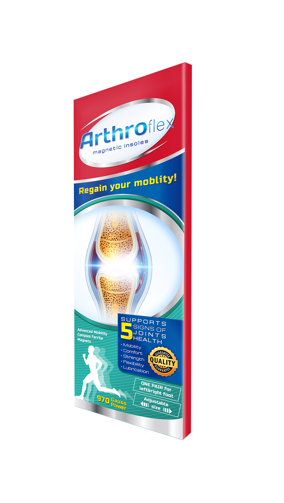

Już niebawem będziesz cieszył się zdrowymi stawami. Jednak zanim przejdziesz do kolejnego kroku – proszę, odpowiedz na jedno, ważne pytanie...
Jeżeli Twoja odpowiedź brzmi „TAK” – koniecznie czytaj dalej:
U osób po 35. roku życia ryzyko związane z pojawieniem się zwyrodnień stawów jest naprawdę wysokie, a wraz z wiekiem przywrócenie 100% sprawności ruchowej stanowi nie lada wyzwanie. Potrzeba naprawdę silnej broni, by zregenerować uszkodzone upływem lat, ciężką pracą i przebytymi kontuzjami stawy.
Jednak nie martw się, ponieważ bez względu na wiek i stopień zaawansowania problemu – osiągniesz spektakularny efekt szybciej i łatwej niż przypuszczasz!
Jedyna rzecz, jakiej teraz potrzebujesz, to intensywne natlenienie i odżywienie komórek oraz wzmocnienie mięśni i ścięgien – teraz możesz to uzyskać znacznie taniej! Dlatego wybierz wzmocnioną wersję Arthroflex o mocy 2000 Gs dedykowaną specjalnie dla osób, które mają więcej niż 35 lat.
Dostępność wzmocnionej wersji wkładek Arthroflex to 100 sztuk w niesamowicie niskiej cenie – 132 zł. Nie sądzę, żeby ta metoda kiedykolwiek była dostępna w tak korzystnej ofercie. Po wysłaniu 100 sztuk cena produktu wróci do 587 zł.
| Wersja podstawowa (970 Gs) – oferta regularna | 1 duże opakowanie (2000 Gs) – oferta specjalna | |
|---|---|---|
|  | ||
| Wysyłka: | 0 zł | 0 zł |
| Razem: | 97 zł zamiast 317 zł | 132 zł zamiast 587 zł |